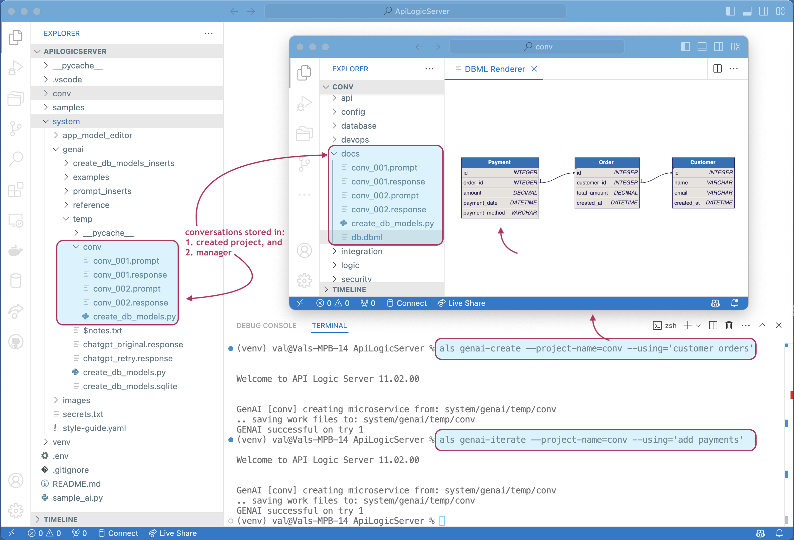
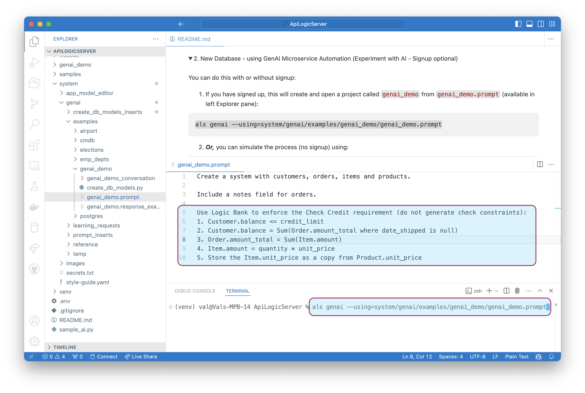
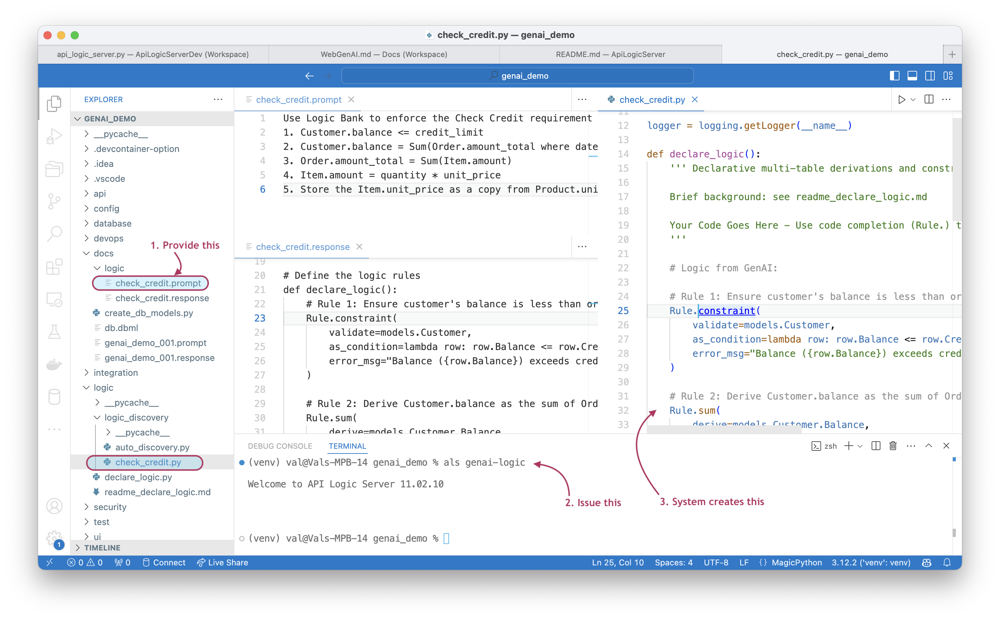
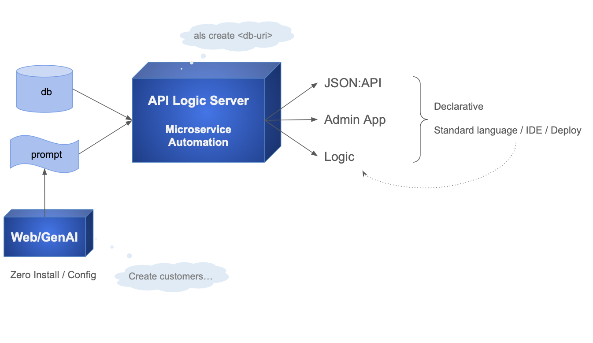
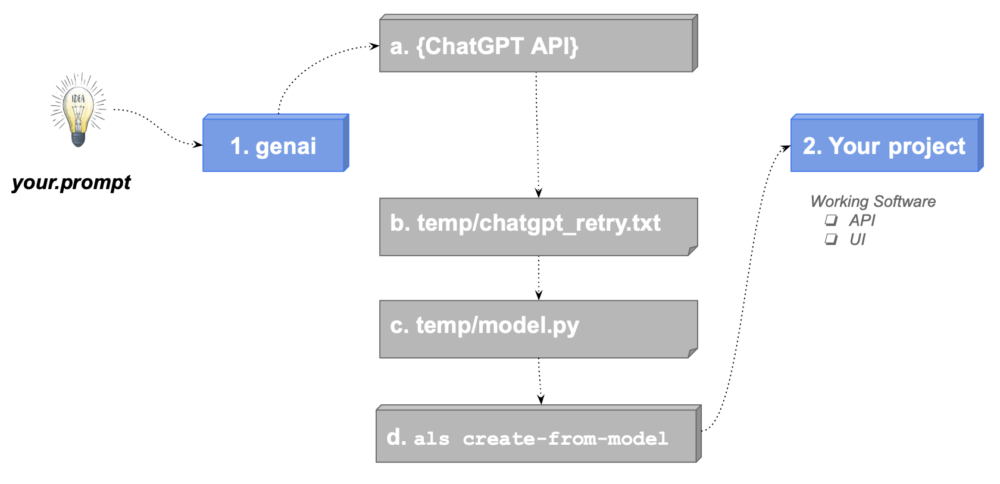

GenAI CLI
 TL;DR - Create Microservice from Natural Language Prompt using CLI
TL;DR - Create Microservice from Natural Language Prompt using CLI
API Logic Server / GenAI provides CLI commands that accepts a Natural Language prompt (e.g, CRM system), and produces:
- a Microservice, an Admin App and a JSON API
- a project that you can download and customize in your IDE using rules and Python
- which can be deployed as a container using automatically generated scripts.
API Logic Server / GenAI uses:
- GenAI services for data model creation, and
- API Logic Server for project creation.
You can also use GenAI services via the GenAI WebSite.
Overview
To use GenAI to create projects
- Establish your virtual environment (suggestion: use the Manager)
- Provide a prompt in either a file (
als genai), or a CLI argument (als genai-create):
als genai --using=system/genai/examples/genai_demo/genai_demo.prompt
# or, provide the prompt in an **quoted** argument:
als genai-create --project-name='customer_orders' --using='customer orders'
Projects are created in the currrent working directory, here, the manager.
Configuration
GenAI uses ChatGPT, which requires an API Key. The simplest approach is to
- Obtain one from here or here
- Authorize payments here
- Create an environmental variable
APILOGICSERVER_CHATGPT_MODEL
Conversations vs. resubmit
You can review created projects by using the app, and/or reviewing the data model. Of course, it's simple to resubmit a new prompt and re-create the project.
However, this will be a completely new rendition of your idea, and it may change things you like about the project. Conversations enable you to keep what you already have, while making desired changes.
When you create a project, the API Logic Server / GenAI saves your prompt and response in a conversation-directory. Conversations are saved in 2 different conversation-directories:
-
the manager's
system/genai/temp/<project>directory -
the created project's
docdirectory.
You can iterate with interactive prompts, or by adding files to the manager's system/genai/temp/<project> directory.
Conversations - Interactive
The figure below creates and iterates a project, using the manager:
als genai-create -project-name=conv —-using='customer orders'
als genai-iterate —-project-name=conv —using='add payments'

Conversations - Files
Alternatively, you can iterate projects by adding files to the Manager's temp directory:
als genai-create --project-name=conv --using='customer orders'
echo "add payments" | cat >> system/genai/temp/conv/conv_002.prompt
als genai --using=system/genai/temp/conv
The project name can be provided with the --project-name argument (as of release 11.02.01). If omitted, it is defaulted to the last node of the directory name, here, conv.
This will recreate the project based on the existing context. See the next section, below.
Customized Project Sync
In the prior section, the result was a recreated project. If you have customized the project, you can preserve your customizations as follows:
- Copy
database/models.pyanddb.sqlitefrom the GenAI to your customized project -
In your customized project, use
als rebuild-from-model- For further information, see Database Design Changes.
Natural Language Logic
As of release 11.2.10, you can declare Natural Language Logic when you create projects, and for existing projects.
Status: Beta. Current implementation presumes projects are running in the Manager directory.
Create Projects with Logic
As shown below, you can use the CLI als genai command to designate a prompt file that generates a system, including logic.
Note:
- Logic files can contain derivations and constraints
- The system will create model attributes for derived columns. Note that these can dramatically improve performance.
You can declare logic formally, or informally.
Formal Rules
You can use familiar dot notation in declaring rules, e.g.

Create a system with customers, orders, items and products.
Include a notes field for orders.
Use LogicBank to enforce the Check Credit requirement:
1. Customer.balance <= credit_limit
2. Customer.balance = Sum(Order.amount_total where date_shipped is null)
3. Order.amount_total = Sum(Item.amount)
4. Item.amount = quantity * unit_price
5. Store the Item.unit_price as a copy from Product.unit_price
Informal Rules
You can also use a more relaxed declaration. For example, you can create a system (database, API, Admin App and Logic) with the following prompt (see system/genai/examples/genai_demo/genai_demo_informal.prompt):
Create a system with customers, orders, items and products.
Include a notes field for orders.
Use LogicBank to enforce the Check Credit requirement:
1. The Customer's balance is less than the credit limit
2. The Customer's balance is the sum of the Order amount_total where date_shipped is null
3. The Order's amount_total is the sum of the Item amount
4. The Item amount is the quantity * unit_price
5. The Item unit_price is copied from the Product unit_price
Multi-rule Logic
You can even declare logic that is transformed into 2 rules:
System for Departments and Employees.
LogicBank:
1. Sum of employee salaries cannot exceed department budget
This creates a running system: a database, an API, an Admin App, and logic. From the Manager:
als genai --using=system/genai/examples/emp_depts/emp_dept.prompt
The logic is non-trivial:
- A
Department.total_salariesis created - Two rules are created in
logic/declare_logic.py
# Logic from GenAI: (or, use your IDE w/ code completion)
# Aggregate the total salaries of employees for each department.
Rule.sum(derive=Department.total_salaries, as_sum_of=Employee.salary)
# Ensure the sum of employee salaries does not exceed the department budget.
Rule.constraint(validate=Department, as_condition=lambda row: row.total_salaries <= row.budget, error_msg="Total salaries ({row.total_salaries}) exceed the department budget ({row.budget})")
# End Logic from GenAI
Conditional Derivations
You can make derivations conditional, for example:
Provide a 10% discount when buying more than 10 carbon neutral products
The Item carbon neutral is copied from the Product carbon neutral

Cardinality Patterns
Logic GenAI training has enabled the following:
Products have Notices, with severity 0-5.
Raise and error if product is orderable == True and there are any severity 5 Notices, or more than 3 Notices.
Notes:
- Note the use of a "qualified any", resulting in a count with a where condition:
# Logic from GenAI: (or, use your IDE w/ code completion)
# Derive product notice count from related notices.
Rule.count(derive=Product.notice_count, as_count_of=Notice)
# Derive count of severity 5 notices for products.
Rule.count(derive=Product.class_5_notice_count, as_count_of=Notice, where=lambda row: row.severity == 5)
# Ensure product is not orderable if conditions on notices are met.
Rule.constraint(validate=Product,
as_condition=lambda row: not (row.orderable and (row.class_5_notice_count > 0 or row.notice_count > 3)),
error_msg="Orderable product contains severity 5 or excessive notices.")
# End Logic from GenAI
Add Logic to Existing Projects
As shown below, in an existing project located under the Manager:
-
Create a prompt such as
docs/logic/check_credit.prompt- Create logic files in
docs/logic - Use a descriptive name to denote the purpose of the logic
- Your
docs/logiccan contain multiple files; only.promptfiles are processed
- Create logic files in
-
In the terminal window:
- Your logic is created in
logic/logic_discovery
Notes:
- See the notes above for creating new projects with logic
- Unlike new projects, columns are not created automatically for derived attributes. You can create these as described in data model changes.

Logic Suggestions
You can ask GenAI to suggest logic for your system. This can help you learn about rules, and can inspire your own imagination about required logic.
It's AI, so or course you will want to review the suggestions carefully.
Explore suggestions using the Manager:
# 1. Create Project, without Rules
als genai --project-name='genai_demo_no_logic' --using=system/genai/examples/genai_demo/genai_demo_no_logic.prompt
# 2. Request Rule Suggestions
cd genai_demo_no_logic
als genai-logic --suggest
You can review the resultant logic suggestions in the genai_demo_no_logic project:
- See and edit:
docs/logic_suggestions/002_logic_suggestions.prompt(used in step 3, below)- This corresponds to the WebGenAI Logic Editor - Logic View in the WebGenAI web app
# 3. See the rule code for the logic
als genai-logic --suggest --logic='*'
Important notes about suggestions and generated code:
* --suggest --logic='*' is intended to enable you to identify logic that does not translate into proper code
* The example above was pretty good, but sometimes the results are downright silly:
* Just run suggest again, or
* Repair docs/logic_suggestions/002_logic_suggestions.prompt
Also...
* It is not advised to paste the code into logic/declare_logic.py
* The suggested logic may result in new data model attributes
* These are created automatically by running als genai (next step)
The logic suggestions directory now contains the prompts to create a new project with the suggested logic.
When you are ready to proceed:
1. Execute the following to create a new project (iteration), with suggested logic:
# 4. Create a new project with the Rule Suggestions
cd .. # important - back to manager root dir
als genai --project-name='genai_demo_with_logic' --using=genai_demo_no_logic/docs/logic_suggestions
Observe:
1. The created project has the rule suggestions in logic/declare_logic.py
2. A revised Data Model in database/models.py that includes attributes introduced by the logic suggestions
3. Revised test database, initialized to reflect the derivations in the suggested logic
Appendices
GenAI and API Logic Server
GenAI is part of API Logic Server. As shown below:
-
API Logic Server can create microservices (Admin Apps, APIs, and Logic) from databases.
-
It can also create microservices from database models (
als create --from-model=my_model.py) -
GenAI
- Use ChatGPT APIs, and creates a model file from the response
- Submit that to
als create --from-model=my_model.py

Error Recovery
AI results are not consistent, so you may sometimes need to correct errors and resume. This requires a bit of background about genai processing.
GemAI Processing
genai processing is shown below (internal steps denoted in grey):
-
You create your .prompt file, and invoke
als genai --using=your.prompt. genai then creates your project as follows:a. Submits your prompt to the
ChatGPT APIb. Writes the response to file, so you can correct and retry if anything goes wrong
c. Extracts model.py from the response
d. Invokes
als create-from-model, which creates the database and your project -
Your created project is opened in your IDE, ready to execute and customize.
a. Review
Sample-Genai.md, Explore Customizations.

Recovery options
AI somtimes fails - here's how to recover after you correct the response or the model file.
From the Model File
You can find the models file at system/genai/temp/model.py. You can correct the model file, and then run:
als create --project-name=genai_demo --from-model=system/genai/temp/create_db_models.py --db-url=sqlite
From the Response
Or, correct the chatgpt response, and